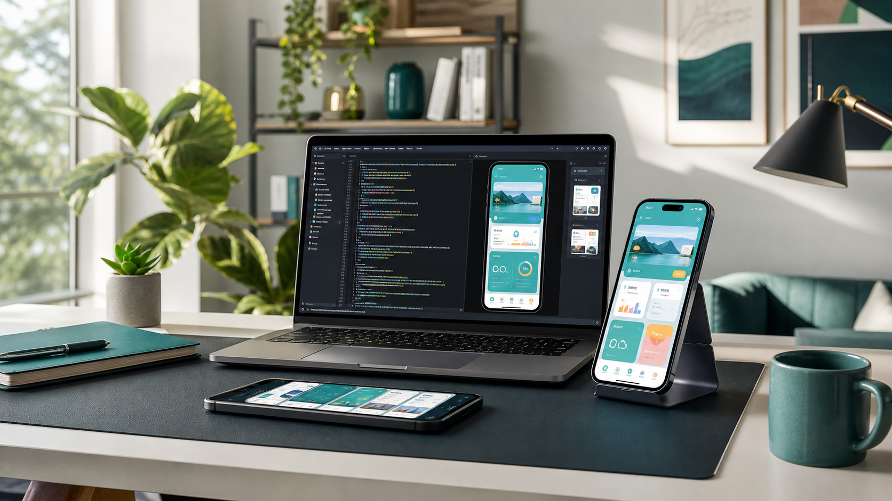

Reduce ambiguity
I clarify the user, promise, main journey, and tradeoffs before implementation so every screen has a job.
Flutter engineer for ambitious mobile products
Built for CTOs, founders, hiring managers, and teams that value product taste.
I help founders and remote teams turn a focused mobile brief into a considered Flutter build: clear user flows, practical app structure, and release-minded details.

The Journey
I clarify the user, promise, main journey, and tradeoffs before implementation so every screen has a job.
I turn the plan into Flutter screens, reusable components, state boundaries, API flows, and interaction details.
I treat launch and handoff as part of engineering: real-device review, edge states, notes, and clear next actions.
Decision Signals
I connect screens to user intent, business goals, and scope control instead of treating UI as decoration.
I care about structure, naming, states, API boundaries, and the small choices that keep a codebase understandable.
I communicate progress, blockers, assumptions, and decisions so remote collaboration feels predictable.
Selected Work
A selection of published mobile apps and websites from my work in Flutter, WordPress, Webflow, and JavaScript.
Featured Case Study
Shpper is a published mobile platform focused on personalized shipping and shopping experiences.
Shipping and shopping are easier when the experience is centered around the person making the request.
Bring peer-to-peer shipping and shopping into one focused mobile product.
Flutter mobile development for a published Android experience.
Proof Next
Systems Thinking
Ways To Hire Me
Turn a focused idea or Figma flow into a Flutter Android MVP with clean screens, Firebase foundations, and release-minded structure.
Upgrade rough app screens with stronger hierarchy, spacing, loading states, error states, and details that make users trust the product.
Build auth, Firestore data flow, storage planning, and practical app structure so the product can grow beyond a prototype.
Join an existing team as a reliable Flutter contributor who can communicate clearly, own features, and reduce delivery uncertainty.
Choose The Track
Delivery Process
Clarify the user, the core journey, the non-goals, and what would make the first version worth shipping.
Set up structure, navigation, state boundaries, API contracts, and reusable UI patterns.
Handle loading, empty, error, success, and edge states so the app feels intentionally built.
Review on real devices, document decisions, and prepare the project for launch, handoff, or iteration.
Capability Map
Contact
Send the problem, audience, timeline, budget range, and any design or API context. I will reply with a practical next step and a clear view of where I can create value.